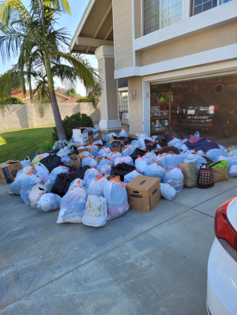
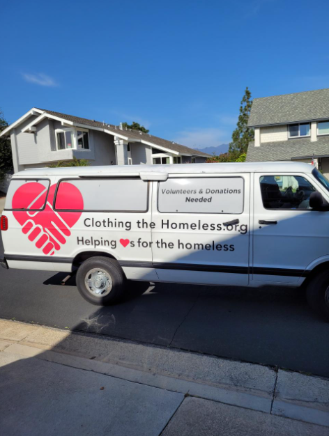
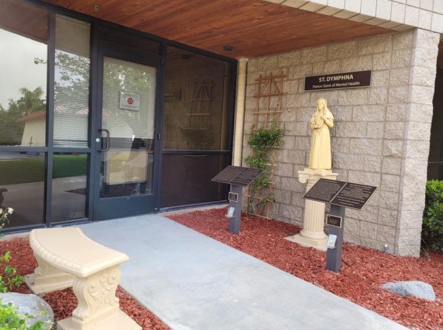

Core Skills
Microsoft Excel
Data analysis and financial modeling
Adaptability
Quick learner across diverse environments
Leadership
Team management and project coordination
Time Management
Efficient prioritization and execution
Marketing & Design
Photoshop, Photopea, social media strategy
Customer Service
Client relations and satisfaction
Experience
Marketing Intern
PIE Dev Studios
Remote
- Conducted market research and competitor analysis to support brand development
- Met with team weekly to discuss progress and ensure on-time game release
- Contributed ideas for community engagement and pre-launch traction
- Participated in user feedback sessions to refine gameplay quality
- Created Instagram marketing posts using Photoshop and Photopea, repurposing blog content into visual assets aligned with brand messaging
- Supported social media content strategy to improve audience engagement and pre-launch visibility
Server / Host
Chloe's Kitchen
Santa Cruz, CA
- Greeted and served customers, ensuring an inviting front-of-house experience
- Managed multiple responsibilities during high-traffic hours including seating, orders, and food service
- Coordinated with kitchen staff to ensure accurate and timely service
- Handled customer questions and resolved complaints professionally
- Operated POS systems for order entry and payment processing
Salesperson
Depop (Self-Employed)
- Operated a Depop storefront, managing product listings, pricing, and customer communication
- Created engaging product listings with detailed descriptions and photography
- Provided consistent customer service to build positive reputation
Shift Lead
Yogurtland
Lake Forest, CA
- Led store operations during shifts, ensuring smooth workflow and optimal customer service
- Managed inventory, tracked stock levels, and placed orders
- Managed cash handling and prepared financial reports with accuracy
- Trained and supervised team members to ensure efficiency and customer satisfaction
- Demonstrated leadership by resolving problems and ensuring store profitability
Courtesy Clerk
Stater Bros. Markets
Lake Forest, CA
- Provided excellent customer service, assisting shoppers with product locations
- Maintained store organization through routine cleaning and cart management
- Developed product knowledge to assist customers efficiently
Featured Projects
Clothing Drive Initiative
Jan 2021 - Dec 2022


- Led and organized a clothing drive at local church for two years
- Partnered with Clothing the Homeless, Laura's House, Salvation Army, and South County Outreach
- Successfully collected and distributed over 250 bags of clothing to homeless individuals
- Utilized video announcements and community engagement to maximize donations
- Coordinated volunteers and handled distribution logistics
Saint Dymphna Memorial
Jan 2020 - Jan 2021
- Designed and planned a permanent shrine for Saint Dymphna, the Saint of Mental Health
- Secured over $6,000 in funding through successful fundraising initiatives
- Managed project finances and budgeting while maintaining high standards
- Worked closely with church leadership, contractors, donors, and volunteers
- Directed all aspects from planning to execution, coordinating materials and timelines
- Quickly resolved unexpected site challenges by reorganizing construction plans
Education
University of California, Santa Cruz
Bachelor's Degree in Business Management Economics
Skills: Microsoft Excel, Microsoft Word, Data Analysis
El Toro High School
Activities: National Honors Society, Varsity Tennis, California Scholarship Federation
Skills: AutoCAD, SOLIDWORKS
Get In Touch
I'm currently seeking internship opportunities for Summer 2026. Let's connect!